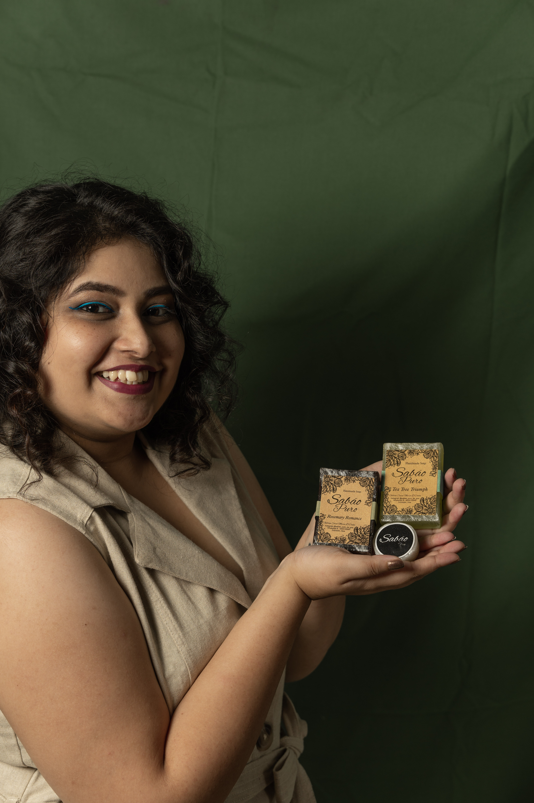

Tons of Gratitude from Sabão Puro Founder GILLIAN
D'COSTA!
Here's what she has to say:
Hi,Gillian Dcosta here,based in Chandor and proud founder of Sabão Puro.
Sabão Puro started almost 9 months back, and this brain child of mine has grown and is growing
beyond bounds.
First made out of need to subside a metal reaction on my skin, this line of natural handmade soaps
has seen many a doors and washed down many a skin conditions and consequently given healthy, clean,
glowing skin along with a peaceful/satisfying state of mind.
"Handmade + Natural = Pure Soap" with this motto, I intend on continuing aiding all your wholesome
bathing experiences.
Why not wash away stress with the calming aroma of Eucalyptus & Rosemary Essential Oil?
Why not dry out oily skin with effective strokes of Lavender Essential Oil?
Why not banish acne from making appearances with Tea Tree Essential Oil?
Why not help your skin glow with Lemon Essential Oil?
..... And so much more!!!